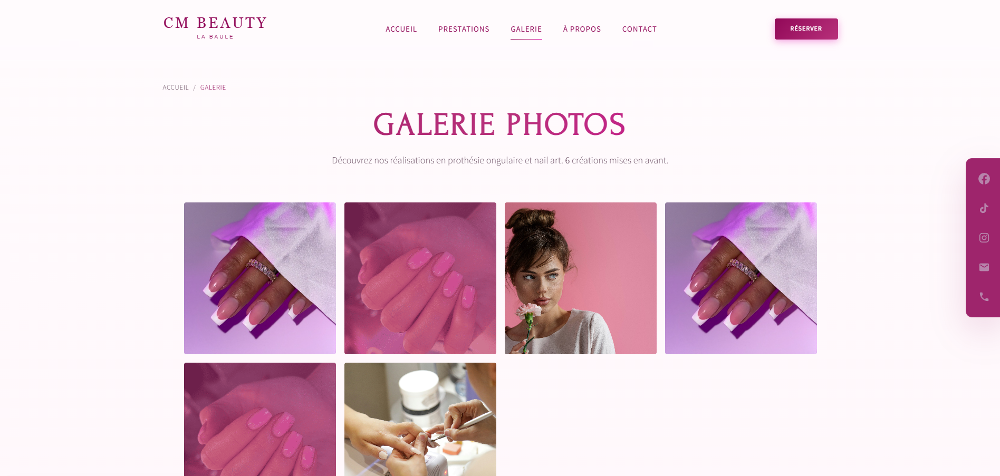
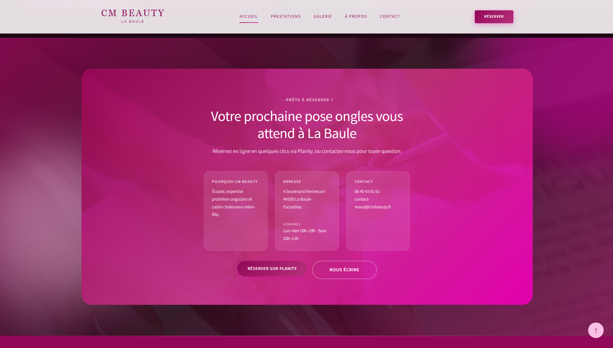

Site vitrine · Onglerie · La Baule
CM Beauty — ongles
Site web pour une cliente en onglerie : prendre en compte ses besoins, ses références et ses attentes esthétiques pour une présence en ligne adaptée à son activité.
01 — Besoins cliente
Une solution cohérente avec l’activité
Réalisation d’un site pour une professionnelle de l’onglerie : analyse de ses objectifs, de son positionnement et de ses références visuelles pour proposer une vitrine numérique alignée sur son univers (prestations, galerie, réservation).
L’objectif : développer la présence en ligne de l’organisation tout en reflétant le soin et l’esthétique de ses prestations nail art.
02 — Mode projet
Planification et livraison
Le projet a été mené en mode projet : analyse des objectifs, planification des tâches, conception des pages puis intégration HTML/CSS responsive.
Mise en place et livraison d’un service en ligne fonctionnel destiné aux utilisateurs finaux (cliente et clientes de l’institut).

03 — Compétences visées
Catégories du projet
Trois axes au cœur du projet : renforcer la visibilité de l’institut en ligne, organiser le travail de bout en bout, et proposer un site clair pour la cliente comme pour ses clientes.
- Présence en ligne Développer la visibilité de l’activité : vitrine, galerie et informations pratiques.
- Mode projet Analyse des objectifs, planification des tâches et suivi jusqu’à la livraison.
- Service utilisateurs Site fonctionnel pour la cliente et ses clientes : navigation, contenus et réservation.

04 — Résultat
Parcours complet : portfolio, galerie, contact et réservation en ligne.